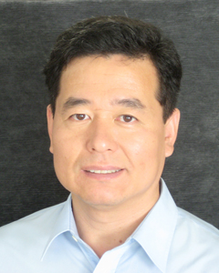
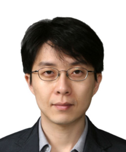

|
People
-
Prof.
Kyungwon
An (Principal Investigator)
-
Prof.
Hyunseok
Jeong (Co-investigator)
-
Prof.
Yong-il
Shin (Foreign Scholar, Full-time
Co-investigator)
|

Dr. Kyungwon An,
Professor
- atomic
physics
- quantum optics
[Prof. An's group homepage]
|
|
Prof. An as a
principal investigator (PI) will lead the group and
provide various supports
to the participating scholars for the success of the
project. He has been a PI of several
projects (Creative Research Initiative,
National Research Laboratory, Pure Basic Science, etc) of similar size
to the
present project in the past 10 years in Korea. His expertise in the
cavity-QED microlaser, single-atom traps and quantum chaos in
microcavities
will be useful for carrying out the proposed studies. He will work
together
with Dr. Shin in creating BECs and will play a major role in
cavity-QED/quantum
information experiments and quantum chaos experiments with BECs working
closely
with Prof. Jeong.
|
|
¡ã
|
|

Dr. Hyunseok Jeong,
Assistant Professor
- quantum
optics
- quantum
informaton
|
|
Prof. Jeong will
provide a theoretical support for the
proposed experiments with his expertise
and knowledge of quantum information
theory, theoretical quantum optics, and foundations of quantum
theory.
His
expertise on these subjects will be immediately useful for the quantum
information study with BEC: generation of macroscopic quantum
superposition/entanglement and quantum information processing by using
BECs and
optical systems.
|
|
¡ã
|
|
Dr. Yong-il Shin,
Invited Assistant Professor
- atomic
physics (BEC experiment)
- former
affiliation: MIT (Center for Ultracold Atoms)
|
|
There is no BEC
experiment group in Korea. Hence,
the main role of Dr. Shin is to introduce and
activate the BEC experiments and
to educate/train graduate students at SNU to be a researcher
in this field.
Shin has participated in various quantum gas experiments at the
Ketterle group
at MIT. His major scientific achievements include first demonstration
of a
trapped BEC interferometer, first observation of decay of a
doubly-quantized
vortex in BEC, and observation of phase separation of a superfluid and
a normal
gas. Recently he has successfully performed a series of experiments
with
strongly interacting Fermi mixtures in collaboration with Wolfgang
Ketterle at
MIT, defining the frontier of the current Fermi gas experiments.
Through the
research activities in this WCU program, he will make an essential
contribution
to establish an active BEC community in Korea.
|
|
|